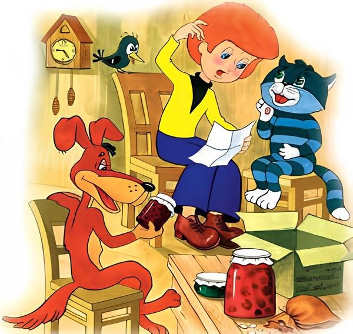
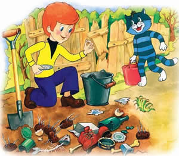
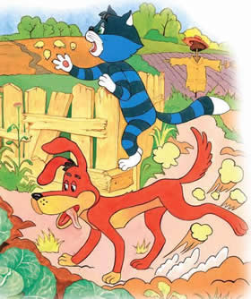
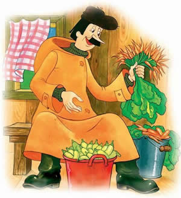

Весна в Простоквашино
Эдуард Успенский
Однажды Дяде Фёдору в Простоквашино посылка пришла, а в ней письмо лежало:
«Дорогой дядя Фёдор! Пишет тебе твоя любимая тётя Тамара, бывший полковник Красной Армии. Тебе пора заняться сельским хозяйством – как для воспитательности, так и для урожая.
Морковь надо сажать по стойке «смирно». Капусту – в шеренгу через одного.
Тыкву – по команде «вольно». Желательно около старой помойки. Тыква всю помойку «высосет» и станет огроменной. Подсолнух хорошо растёт подальше от забора, чтобы его не съели соседи. Помидоры надо сажать прислонёнными к палкам. Огурцы и чеснок требуют постоянного удобрения.
Это я всё прочитала в уставе сельскохозяйственной службы.
Семена я покупала стаканами на рынке и все ссыпала в один мешочек. Но ты на месте разберёшься.
Не увлекайся гигантизмом. Помни о трагической участи товарища Мичурина[3], который погиб, упав с огурца.
Всё. Мы всей семьёй тебя целуем».
От такой посылки дядя Фёдор пришёл в ужас.

Он отобрал себе несколько семечек, которые хорошо знал. Он посадил на солнечном месте семечки подсолнуха. Посадил около помойки семечки тыквы. И всё. Скоро у него всё выросло вкусное, свежее, как в учебнике.
Зато почтальон Печкин набил полные карманы семян и побежал их разбрасывать на свой участок.
У дяди Фёдора было немного работы. Он только поливал свои семена и убирал сорняки.
Матроскин и Шарик занялись капустой. Шарик задними лапами землю вскопал лучше любого трактора.

Матроскин всё у соседей про уход за капустой узнал. И посадил рядом с каждым кочаном капусты огурец. И в середину каждого кочана он запихнул один огурчик. И когда осенью кочан закрылся, внутри него всю зиму находился свежий огурец.

А у Печкина выросло много чего. Прежде всего – отличные сорняки. Потом – что-то похожее на морковь. Только размер был какой-то невиданный. Каждая морковка была не больше спички.
Что касается кабачков, ему повезло. Их выросло больше тысячи. И все они поместились в одну кастрюльку.
Осенью дядя Фёдор собрал друзей и сказал:
– Всё. С самодеятельностью кончаем. Всю зиму будем читать книги издательства «АСТ» про огороды. А потом я приму у вас экзамен. Только после этого вам будет открыт путь в огород.
И это правильно, ребята.